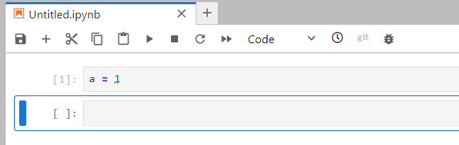
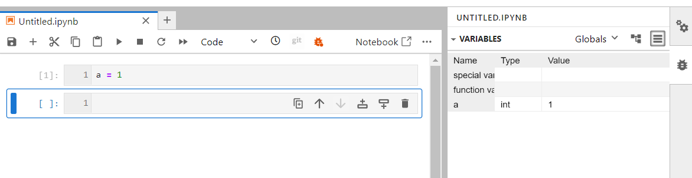

The JupyterLab Interface#
By default, you will get the web-based user interface for Project Jupyter that is called JupyterLab.
Tips#
If the Launcher tab does not exist anymore in your JupyterLab, you can start a new one in “File –> New Launcher”.
Create a new python 3 notebook#
Go back to the File Browser left sidebar tab and in the launcher select Python 3 under the Notebook section:
By default, your new notebook is named as “Untitled.ipynb”:
ipynb is the extension for any Jupyter notebook and you should make sure all your notebooks get this extension (otherwise it is not recognized as a Jupyter notebook)
you can rename your jupyter notebook with the tab “File –> Rename Notebook…” or right click on its name.
Using debugger#
If you want to see the list variables, their values, function callbacks, sett breakpoints. You can eneable a debugger in your notebook.
To do that: click on the little bug button in the headder of your. Where kernels, play etc is lockated:
{kind=link}
When you click on it, it will change its color to orange and the debugger panel on the right will open. You can always collapse the panel and expand it back.
{kind=link}